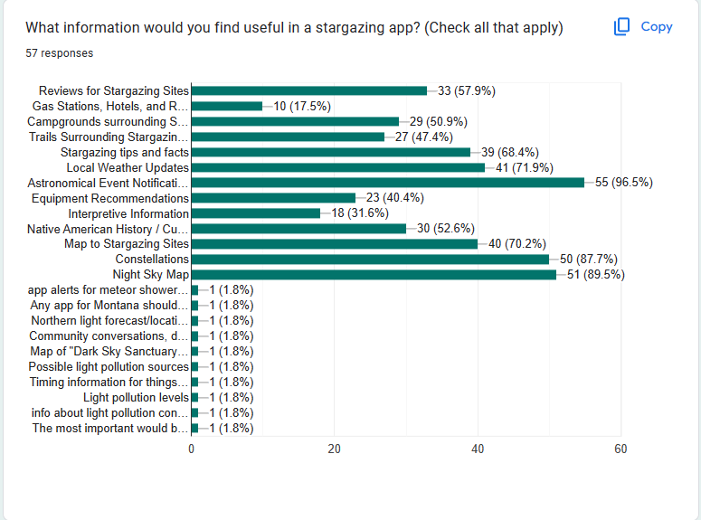

User Feedback
The primary focus of our early design was to determine what users would expect from our app based on the concept alone. We wanted to know what tools the user would want to be equipped with in order to achieve whichever goal they had in mind when they downloaded our hypothetical app. Overall we were looking at features which needed to be added, and how they could be placed within our application in an appealing manner.
Method
An important aspect in our development cycle is to gather feedback from potential users early, and often. Before we defined any functionality or features, we spent time collecting data on what potential users wanted out of a stargazing app. Our user feedback was gathered through the use of a curated survey we distributed to different groups of potential users and 30 minute interviews conducted by our team members. We created 12 interview questions and 16 survey questions which assisted our team in answering some of the questions regarding which features we would like to implement and what potential users wanted to see in a stargazing app.
Summary
From the data we collected during our user-feedback gathering, we found our potential user base would like to see many different features implemented in our app. From our data collection, we found the majority of our participants are Montana residents (54 / 56) with the exception of 2 who stated they are not. As far as the type of phones they possess, the majority of them are Apple users (57%) and the rest stated they use Android as their platform. However, with more data, we can assume those numbers would move closer to 50/50 of Android/Apple users. The frequency of stargazing for most of our participants is split between monthly and weekly visits with just a few that prefer daily and annually. Approximately 73% of participants reported that they used a stargazing app before. Furthermore, 71% of these participants would use an app to locate stargazing sites.
Sample Questions
The questions we gave users were geared towards finding out how they would use our application and how they were currently dealing with the problem we were trying to solve. Our aim was to seek those who are interested in stargazing and what sort of technologies they use to plan out their next stargazing trip. Some sample questions from our feedback sessions are included below:
- “What information would you find useful in a stargazing app?”
- “What features would be most useful in a Stargazing App?”
- “Would you be more inclined to visit a recreation site if you were aware the site was a designated Night Sky viewing site?”
Key Insights
1. Astronomical Event Notifications
Astronomical Event Notifications are events such as meteor showers, auroras, solar
eclipses, and other related events that are sent to the user's device. The majority
of our responses agree that astronomical events would be the most useful
information in a stargazing app among other features.
2. Weather and Live Updates
Weather and cloud-cover are two of the most important factors in planning a stargazing
trip. A large number of our interviewees said that the most challenging aspect of
planning a stargazing trip more than a few weeks out is the unpredictable weather and
the potential for a cloud covered sky when you arrive to the site. Many of the responses
report that they are interested in a feature that can provide live
weather updates and/or projected cloud cover in the future.
3. Designated Night Sky Viewing Site
Approximately 80% of our survey responses and a few of our interviews suggest that they
would be more inclined to visit a recreation site if it was designated as an official
night sky viewing site. One of the most suggested features was the directions to a
stargazing site of their choosing.